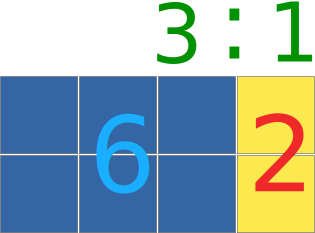
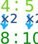
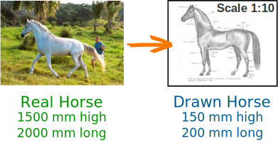

Ratios
A ratio compares values.
A ratio says how much of one thing there is compared to another thing.
There are 3 blue squares to 1 yellow square
Ratios can be shown in different ways:
| Use the ":" to separate the values: | 3 : 1 | |
| Or we can use the word "to": | 3 to 1 | |
| Or write it like a fraction: | 31 |
A ratio can be scaled up:

Here the ratio is also 3 blue squares to 1 yellow square,
even though there are more squares.
Try it Yourself
Using Ratios
The trick with ratios is to always multiply or divide the numbers by the same value.
Example:
|
4 : 5 is the same as 4×2 : 5×2 = 8 : 10 |
 |
Recipes
Example: A Recipe for pancakes uses 3 cups of flour and 2 cups of milk.
So the ratio of flour to milk is 3 : 2
To make pancakes for a LOT of people we might need 4 times the quantity, so we multiply the numbers by 4:
3×4 : 2×4 = 12 : 8
In other words, 12 cups of flour and 8 cups of milk.
The ratio is still the same, so the pancakes should be just as yummy.
"Part-to-Part" and "Part-to-Whole" Ratios
The examples so far have been "part-to-part" (comparing one part to another part).
But a ratio can also show a part compared to the whole lot.
Example: There are 5 pups, 2 are boys, and 3 are girls
Part-to-Part:
The ratio of boys to girls is 2:3 or 2/3
The ratio of girls to boys is 3:2 or 3/2
Part-to-Whole:
The ratio of boys to all pups is 2:5 or 2/5
The ratio of girls to all pups is 3:5 or 3/5
Try It Yourself
Scaling
We can use ratios to scale drawings up or down (by multiplying or dividing).
|
The height to width ratio of the Indian Flag is 2:3 So for every 2 (inches, meters, whatever) of height |
|
|
If we made the flag 20 inches high, it should be 30 inches wide. If we made the flag 40 cm high, it should be 60 cm wide (which is still in the ratio 2:3) |
|
Example: To draw a horse at 1/10th normal size, multiply all sizes by 1/10th

This horse in real life is 1500 mm high and 2000 mm long, so the ratio of its height to length is
1500 : 2000
What is that ratio when we draw it at 1/10th normal size?
| 1500 : 2000 | = 1500×1/10 : 2000×1/10 | |
| = 150 : 200 |
We can make any reduction/enlargement we want that way.
Big Foot?
| Allie measured her foot and it was 21cm long, and then she measured her Mother's foot, and it was 24cm long. |
"I must have big feet, my foot is nearly as long as my Mom's!"
But then she thought to measure heights, and found she is 133cm tall, and her Mom is 152cm tall.
In a table this is:
| Allie | Mom | |
| Length of Foot: | 21cm | 24cm |
| Height: | 133cm | 152cm |
The "foot-to-height" ratio in fraction style is:
| Allie: | 21133 | Mom: | 24152 |
We can simplify those fractions like this:
| Allie: | 21/7133/7 | Mom: | 24/8152/8 |
And we get this (please check that the calcs are correct):
| Allie: | 319 | Mom: | 319 |
"Oh!" she said, "the Ratios are the same".
"So my foot is only as big as it should be for my height, and is not really too big."
Practice
You can practice your ratio skills by Making Some Chocolate Crispies